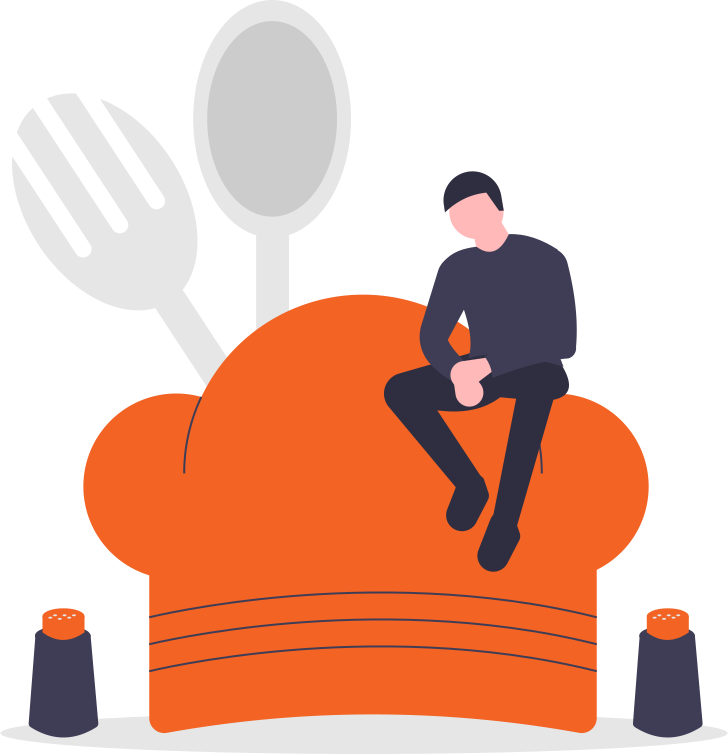

<ion-header>
    <ion-toolbar>
      <ion-buttons slot="start">
        <ion-back-button defaultHref="app/recipes"></ion-back-button>
      </ion-buttons>
      <ion-title>Your Bookmarks</ion-title>
    </ion-toolbar>
  </ion-header>
  

<ion-content class="ion-padding">

     <ion-refresher slot="fixed" (ionRefresh)="ionRefresh($event)">
        <ion-refresher-content
          pullingIcon="arrow-dropdown"
          pullingText="Pull to refresh"
          refreshingSpinner="circles"
          refreshingText="Refreshing bookmarks...">
        </ion-refresher-content>
        </ion-refresher>

        <div *ngIf="userFavs.length >= 1 && loading === true">
            <div class="ion-padding custom-skeleton">
              <div class="skeleton-item">
                <ion-thumbnail size>
                    <ion-skeleton-text animated></ion-skeleton-text>
                  </ion-thumbnail>
      
                  <h5 class="recipeTitle">
                      <ion-skeleton-text animated style="width: 80%"></ion-skeleton-text>
                      <ion-skeleton-text animated style="width: 60%"></ion-skeleton-text>
                      <ion-skeleton-text animated style="width: 40%"></ion-skeleton-text>
                  </h5>
              </div>
      
              <div class="skeleton-item">
                  <ion-thumbnail size>
                      <ion-skeleton-text animated></ion-skeleton-text>
                    </ion-thumbnail>
        
                    <h5 class="recipeTitle">
                        <ion-skeleton-text animated style="width: 80%"></ion-skeleton-text>
                        <ion-skeleton-text animated style="width: 60%"></ion-skeleton-text>
                        <ion-skeleton-text animated style="width: 40%"></ion-skeleton-text>
                    </h5>
                </div>
      
                <div class="skeleton-item">
                    <ion-thumbnail size>
                        <ion-skeleton-text animated></ion-skeleton-text>
                      </ion-thumbnail>
          
                      <h5 class="recipeTitle">
                          <ion-skeleton-text animated style="width: 80%"></ion-skeleton-text>
                        <ion-skeleton-text animated style="width: 60%"></ion-skeleton-text>
                        <ion-skeleton-text animated style="width: 40%"></ion-skeleton-text>
                      </h5>
                  </div>
              </div>
          </div>

          <div class="favorites" *ngIf="userFavs.length >= 1; else noFavs">

              <ion-row>
                  <ion-col size="12" *ngFor="let item of getKeys(thumbs)" (click)="goTo(thumbs.get(item).id)">
                    <div class="recipe ion-text-start">
                        <app-aspect-ratio [ratio]="{w:1, h:1}">
                            <app-image-shell [mode]="'cover'" animation="spinner" class="item-image" [src]="thumbs.get(item).image"></app-image-shell>
                          </app-aspect-ratio>
                        <h5 class="recipeTitle">
                            <app-text-shell animation="bouncing" [data]="thumbs.get(item).title" lines="2"></app-text-shell>
                        </h5>
                      </div>
                    </ion-col>
                  </ion-row>
          </div>

          <ng-template #noFavs>
              <ion-grid style="height: 100%">
                  <ion-row justify-content-center align-items-center style="height: 100%; flex-direction: column">
                    <div text-center>
                      
                      <p>You haven't saved any recipes yet</p>
                      <br>
                      <ion-button routerLink="/app/recipes" expand="block" fill="solid" shape="round">
                        Go to recipes
                      </ion-button>
                    </div>
                  </ion-row>
                </ion-grid>
          </ng-template>

</ion-content>
